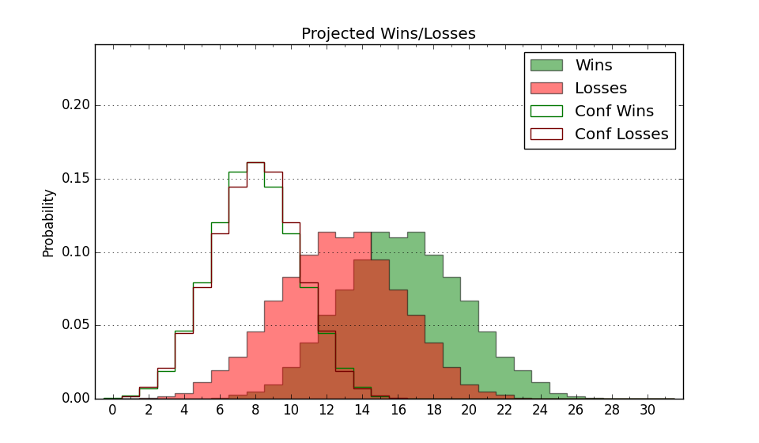

| Home | Game Probabilities | Conferences | Preseason Predictions | Odds Charts | NCAA Tournament |
| City: | Santa Clara, California | |
| Conference: | West Coast (1st)
| |
| Record: | 0-0 (Conf) 4-0 (Overall) | |
| Ratings: | Comp.: 4.7 (117th) Net: 5.9 (129th) Off: 97.3 (237th) Def: 91.4 (55th) SoR: 78.1 (13th) |
| Remaining | ||||||
|---|---|---|---|---|---|---|
| Date | Opponent | Win Prob | Pred. | |||
| 11/20 | Mississippi Valley St. (358) | 96.6% | W 82-58 | |||
| 11/24 | (N) Oregon (20) | 16.3% | L 66-78 | |||
| 12/2 | @ California (209) | 56.3% | W 73-71 | |||
| 12/9 | (N) New Mexico (63) | 32.7% | L 76-81 | |||
| 12/13 | Utah St. (78) | 55.5% | W 74-73 | |||
| 12/16 | (N) Washington St. (76) | 40.1% | L 69-72 | |||
| 12/20 | @ San Jose St. (111) | 34.3% | L 66-70 | |||
| 12/23 | (N) Duquesne (96) | 45.4% | L 74-75 | |||
| 12/30 | Yale (69) | 50.6% | W 71-70 | |||
| 1/4 | @ Loyola Marymount (95) | 30.7% | L 70-76 | |||
| 1/6 | @ Pepperdine (165) | 47.1% | L 74-75 | |||
| 1/11 | Gonzaga (30) | 30.9% | L 75-81 | |||
| 1/13 | Saint Mary's (38) | 34.9% | L 63-67 | |||
| 1/18 | @ Pacific (246) | 63.9% | W 75-71 | |||
| 1/20 | Portland (124) | 68.1% | W 80-74 | |||
| 1/25 | Pepperdine (165) | 75.2% | W 79-71 | |||
| 1/31 | @ Saint Mary's (38) | 13.6% | L 59-72 | |||
| 2/3 | San Diego (232) | 84.6% | W 83-70 | |||
| 2/10 | @ San Francisco (94) | 30.5% | L 70-76 | |||
| 2/15 | Pacific (246) | 85.8% | W 80-66 | |||
| 2/17 | @ San Diego (232) | 61.8% | W 78-75 | |||
| 2/22 | Loyola Marymount (95) | 60.1% | W 74-71 | |||
| 2/24 | @ Gonzaga (30) | 11.6% | L 70-85 | |||
| 2/29 | @ Portland (124) | 38.5% | L 75-79 | |||
| 3/2 | San Francisco (94) | 59.9% | W 74-71 | |||
| Previous | Game Score | |||||
| Date | Opponent | Win Prob | Result | Off | Def | Net |
| 11/8 | Dixie St. (217) | 82.3% | W 77-69 | -11.9 | 6.8 | -5.1 |
| 11/11 | St. Francis PA (360) | 96.7% | W 82-59 | -2.8 | 5.5 | 2.7 |
| 11/14 | @Stanford (62) | 20.6% | W 89-77 | 15.6 | 16.8 | 32.3 |
| 11/18 | Southeastern Louisiana (242) | 85.6% | W 65-63 | -11.7 | -2.5 | -14.1 |
| Stats & Trends | |||||
|---|---|---|---|---|---|
| Current | Day | Week | Month | Season | |
| Composite | 4.7 | -1.0 | +0.0 | +0.5 | +0.5 |
| Comp Rank | 117 | -12 | -8 | -2 | -2 |
| Net Efficiency | 5.9 | -6.2 | -3.3 | -- | -- |
| Net Rank | 129 | -45 | -18 | -- | -- |
| Off Efficiency | 97.3 | -3.6 | -5.1 | -- | -- |
| Off Rank | 237 | -40 | -58 | -- | -- |
| Def Efficiency | 91.4 | -2.6 | +1.7 | -- | -- |
| Def Rank | 55 | -17 | +25 | -- | -- |
| SoS Rank | 287 | -38 | +22 | -- | -- |
| Exp. Wins | 16.3 | -0.3 | +1.2 | +1.7 | +1.7 |
| Exp. Conf Wins | 8.0 | -0.2 | +0.3 | +0.3 | +0.3 |
| Conf Champ Prob | 4.7 | -0.7 | +1.2 | +1.6 | +1.6 |

| Advanced Stats | ||
|---|---|---|
| Stat | Value | Rank |
| Off Eff FG % | 0.537 | 89 |
| Off Ast Ratio | 0.148 | 123 |
| Off ORB% | 0.277 | 178 |
| Off TO Rate | 0.211 | 344 |
| Off FT Ratio | 0.239 | 314 |
| Def Eff FG % | 0.460 | 98 |
| Def Ast Ratio | 0.122 | 108 |
| Def ORB% | 0.174 | 13 |
| Def TO Rate | 0.163 | 133 |
| Def FT Ratio | 0.342 | 190 |